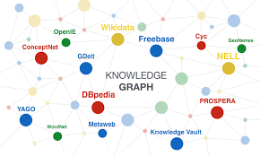

Introduction
In an increasingly interconnected digital world, where data is vast and sprawling, the need for efficient organization and retrieval has never been more pressing. Enter the knowledge graph, a transformative tool reshaping the way we navigate and understand information. From powering search engines to enhancing artificial intelligence, knowledge graphs are becoming the backbone of modern knowledge management systems, driving innovation across various domains.
Understanding Knowledge Graphs
At its core, a knowledge graph is a structured representation of knowledge, typically encoded in a graph format comprising nodes, edges, and properties. Unlike traditional databases, which store information in tabular form, knowledge graphs capture the complex relationships between entities, offering a richer and more contextualized view of data.
Imagine a vast network where each node represents a piece of information—a person, place, concept, or event—while edges denote the connections between them. These connections elucidate the semantic relationships, such as "is a," "part of," or "related to," enabling a deeper understanding of the underlying data.
The Building Blocks of Knowledge Graphs
Nodes:
Entities:
Represent real-world objects like people, organizations, products, etc.
Concepts: Abstract ideas or categories that help organize information.
Edges:
Relationships: Define how entities are connected or associated with each other.
Attributes: Provide additional details or properties about nodes.
Properties:
Key-Value Pairs: Store specific attributes or characteristics of nodes and edges.
While knowledge graphs offer immense potential, several challenges persist, including data integration, quality assurance, and scalability. Achieving interoperability and ensuring data consistency across diverse sources remain ongoing concerns. Moreover, as knowledge graphs scale in size and complexity, addressing computational and storage requirements becomes paramount.
Looking ahead, advancements in graph database technology, machine learning, and semantic web standards promise to overcome these obstacles, unlocking new possibilities for knowledge representation and reasoning. From dynamic schema evolution to probabilistic reasoning, the evolution of knowledge graphs is poised to revolutionize how we perceive and interact with information.